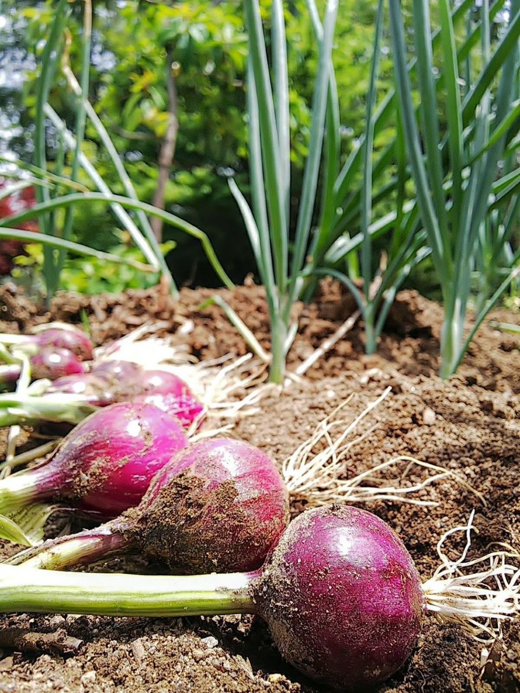

L’oignon est un légume bulbe très cultivé au Sénégal, surtout dans la zone des Niayes. Il préfère les sols légers, sablonneux et bien drainés avec un climat sec. Le semis se fait en pépinière d’Octobre à Novembre, puis le repiquage 40 jours après. La récolte intervient 3 à 4 mois plus tard. C’est un produit de grande consommation, utilisé dans presque tous les plats sénégalais. C’est aussi une culture rentable pour